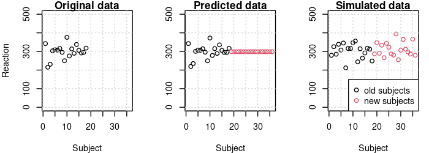

What’s the difference between predict vs simulate in lme4?

What’s the difference between predict vs simulate in lme4?
Most people use the lme4 package to analyze data using mixed effects models. However, the lme4 package also has two tremendously useful functions for the reverse process: generating new data from fitted models. These functions are predict and simulate. Below I will illustrate what these functions do and how they differ.
For this investigation we are going to use the sleepdata data set from the lme4 package. Here is the head of the data frame:
Reaction Days Subject 1 249.5600 0 308 2 258.7047 1 308 3 250.8006 2 308 4 321.4398 3 308 5 356.8519 4 308 6 414.6901 5 308
For convenience, we rename the 18 subjects with consecutive integers starting from 1:
d <- sleepstudy d$Subject <- factor(rep(1:18, each=10))
For predicting and simulating new data, we need parameters. We obtain them by fitting an LMM on the original data:
fm1 <- lmer(Reaction ~ Days + (Days|Subject), d)
summary(fm1)
Linear mixed model fit by REML ['lmerMod']
Formula: Reaction ~ Days + (Days | Subject)
Data: d
REML criterion at convergence: 1743.6
Scaled residuals:
Min 1Q Median 3Q Max
-3.9536 -0.4634 0.0231 0.4634 5.1793
Random effects:
Groups Name Variance Std.Dev. Corr
Subject (Intercept) 612.09 24.740
Days 35.07 5.922 0.07
Residual 654.94 25.592
Number of obs: 180, groups: Subject, 18
Fixed effects:
Estimate Std. Error t value
(Intercept) 251.405 6.825 36.84
Days 10.467 1.546 6.77
Correlation of Fixed Effects:
(Intr)
Days -0.138
Now we add 18 new subjects to the data frame and set their Reaction values to NA.
d <- rbind(sleepstudy, sleepstudy) d$Subject <- factor(rep(1:36, each=10)) d$Reaction <- ifelse(d$Subject %in% 19:36, NA, d$Reaction)
Next we predict and simulate data for the 18 old subjects and the 18 new subjects. Note that we drop the Reaction column from the data frame when we call simulate. This circumvents bug in lme4 which has recently been fixed in the development version.
d$predicted <- predict (fm1, newdata=d, allow.new.levels=T) d$simulated <- simulate(fm1, seed=1, newdata=d[-1], re.form=NA, allow.new.levels=T)$sim_1
predict is deterministic and uses only the fixed effects and the conditional modes (where available, i.e. not for the new subjects). simulate is non-deterministic because it samples random effect values for all subjects and then samples from the conditional distribution.
The graphs below show the subject means for the original data, the predicted data, and the simulated data. We see that predict perfectly reproduces the subject means found in the original data. However, the new subjects all have the same means since no conditional modes were available for them.
In the simulated data, the subject means for the old subjects are different from the means in the original data because simulate samples by-subject random effect values using the variance components in the fitted model. Data for the new subjects is generated in the same way. It should be possible to use the conditional modes for simulating data by setting re.form=NULL, but that produced an error message when I tried it with the current development version of lme4.
f <- function(x, ...) { plot(x, xlab="Subject", ylim=c(0, 500), ...) grid() } par(mfrow=c(1,3), mar=c(4,4,1,1)) with(d, f(tapply(Reaction, Subject, mean), main="Original data", ylab="Reaction", xlim=c(1, 36))) with(d, f(tapply(predicted, Subject, mean), main="Predicted data", ylab="", col=rep(1:2, each=18))) with(d, f(tapply(simulated, Subject, mean), main="Simulated data", ylab="", col=rep(1:2, each=18))) legend("bottomright", pch=c(1,1), col=1:2, c("old subjects", "new subjects"), bg="white")

The following graph shows the effect of Days per subject in the original, the predicted, and the simulated data. Again we see that new subjects have no random variation in the predicted data (no conditional modes available) but they do vary systematically in the simulated data where their random effect values are sampled using the relevant variance components in the fitted model.
x <- with(d, as.matrix(tapply(Reaction, list(Subject, Days), mean), ncol=9)) y <- with(d, as.matrix(tapply(predicted, list(Subject, Days), mean), ncol=9)) z <- with(d, as.matrix(tapply(simulated, list(Subject, Days), mean), ncol=9)) f <- function(xlab="Day", ...) { plot(c(1, 10), c(0, 500), ylab="Raction", xlab=xlab, t="n", ...) grid() } par(mfrow=c(2,3), mar=c(4,4,1,1)) f(main="Original data", "") for (i in 1:18) lines(x[i,]) f(main="Predicted data, old subjects", "") for (i in 1:18) lines(y[i,]) f(main="Predicted data, new subjects", "") for (i in 19:36) lines(y[i,], col="red") f(main="Original data") for (i in 1:18) lines(x[i,]) f(main="Simulated data, old subjects") for (i in 1:18) lines(z[i,]) f(main="Simulated data, new subjects") for (i in 19:36) lines(z[i,], col="red") legend("bottomright", lty=c(1,1), col=1:2, c("old subjects", "new subjects"), bg="white")